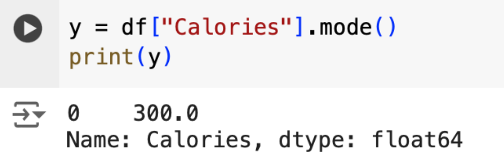

Code berikut digunakan untuk membaca isi dari .csv file. Sebelum menjalankan perintah di bawah, jangan lupa upload file .csv (bisa diunduh dikuliah online) ke Google Colab masing-masing.
Script berikut dapat digunakan untuk melihat 10 baris pertama dari data yang dimiliki
Script berikut dapat digunakan untuk melihat 5 baris terakhir dari data set
Script berikut digunakan untuk melihat informasi detil dari dataset.
Script berikut digunakan untuk menghapus baris yang kosong pada dataset. Silahkan dibandingkan output dari script di bawah dengan hasil dari script pada slide 2.
Script di bawah ini digunakan untuk mengganti nilai null/NaN dengan sebuah value yang kita tentukan. Adapun contoh script ini akan menggantikan nilai NaN pada data original dengan nilai 30
Script berikut digunakan untuk me-replace nilai NaN pada kolom spesifik. Untuk kasus ini, kolom yang akan dipilih adalah “Calories”.
Script berikut digunakan untuk menghitung mean/rata-rata dari sebuah kolom. Untuk contoh, kita akan menggunakan kolom Calories.
Script berikut digunakan untuk menghitung median/nilai tengah dari sebuah kolom. Untuk contoh, kita akan menggunakan kolom Calories.
Script berikut digunakan untuk menghitung modus dari sebuah kolom. Untuk contoh, kita akan menggunakan kolom Calories.
